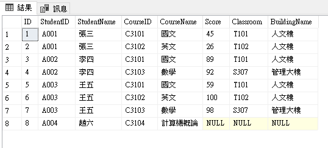
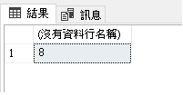
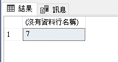
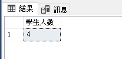
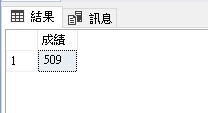
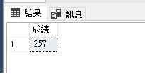
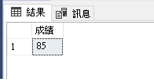
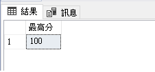
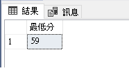

前言
SQL 內建函數有多種，而最常使用的四大函數分別為聚合函數（Aggregate Functions）& 字串函數（String Functions）& 數值函數（Mathematical Functions）& 日期函數（Date and Time Functions）。
正文
SQL 提供的聚合函數是用來執行計算的函數，包含統計、求最值或求和，以利資料分析，使用方式為對一組資料進行計算後返回單一值，而聚合函數在計算時都會忽略 Null。
下列為 SQL Server 2019 提供的聚合函數，這裡不會全部做介紹，特意分類為會介紹與不會介紹兩個標題。
| 本文會介紹 | 不會介紹 | |
|---|---|---|
| COUNT | COUNT_BIG | CHECKSUM_AGG |
| SUM | STDEV | VAR |
| AVG | STDEVP | VARP |
| MAX | APPROX_COUNT_DISTINCT | GROUPING |
| MIN | STRING_AGG | GROUPING_ID |
常用聚合函數：
- COUNT：資料總筆數
- SUM：資料總和
- AVG：計算欄位平均值
- MAX：取得欄位最大值
- MIX：取得欄位最小值
Prepare Student Table

Count
Count 函數用來計算 Items 的數量，或是特定欄位的數量，在指定欄位的情況下，對 Null 的資料不予計算。
計算所有資料量
SELECT COUNT(*) FROM Student，結果為 8 筆計算指定欄位資料量
SELECT COUNT(ID) FROM Student，結果也是 8 筆，好像跟 Count(*) 沒有缺別，下一個例子就會凸顯兩者區別前面講到若遇到 Null 資料不予計算，試著查詢 Score 筆數，結果會濾掉 Null 該筆資料。
SELECT COUNT(Score) FROM Student，結果只會查詢到 7 筆從上面可以知道使用 Count(*) 在查詢總筆數時，某筆資料的 Score 是 Null，但其他欄位並非 Null，所以會加入計算，反之只要有一個欄位有資料是非 Null，其他欄位都是 Null，依然會列入計算。
之前介紹過 DISTINCT 可以去除重複，在 COUNT() 括號內也可使用 DISTINCT 加上指定欄位來去除重複，在計算數量，舉例：不同姓名的學生數量
SELECT COUNT(DISTINCT StudentName) AS 學生人數 FROM Student
SUM
SUM 用來計算總和的函數，如加總金額、加總數量等。
計算成績的總和
SELECT SUM(Score) AS 總成績 FROM Student加入 Where 條件取得王五的總成績
SELECT SUM(Score) FROM Student WHERE StudentName = '王五'
AVG
用來取得平均值的函數，按照慣例，空值會被忽略
取得王五的平均成績（SUM 換成 AVG）
SELECT AVG(Score) FROM Student WHERE StudentName = '王五'
MAX
取得資料欄位內最大值的函數
取得王五分數最高的科目
SELECT MAX(Score) AS 最高分 FROM Student WHERE StudentName = '王五'
MIX
取得資料欄位內最小值的函數
取得王五分數最低的科目
SELECT MIN(Score) AS 最低分 FROM Student WHERE StudentName = '王五'
結語
聚合函數另外還有 COUNT__BIG、STDEV、VAR等較不常使用的函數，這邊也不特別做介紹，可以到官網查看，也有可能哪天心血來潮會補齊…